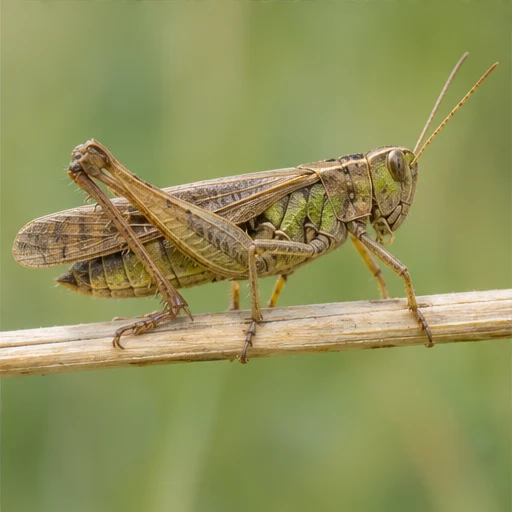
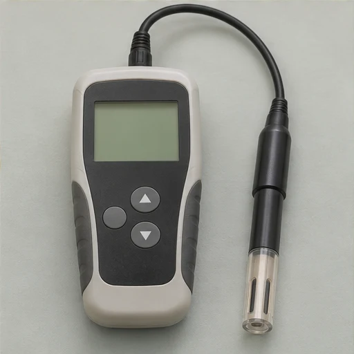
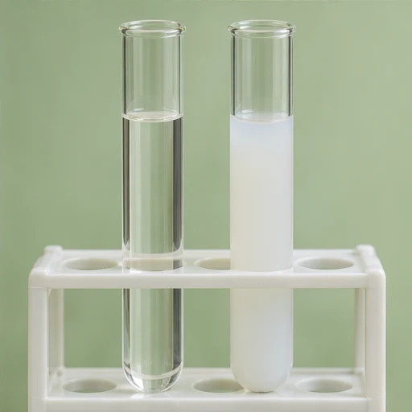

01Que fait-on après avoir préparé le protocole ?
On le met en œuvre. On vérifie le matériel, on réalise l’expérience, puis on organise les résultats.
MISSION 05 / 06 · RESPIRATION
La respiration chez le criquet

DÉFI 1 / 5
Il t’aide à revoir l’essentiel.
Le criquet
Pense à la comparaison entre les deux boîtes.

Le matériel
Le nom de l’appareil commence comme « oxygène ».
Test et témoin
Le test est la boîte où se trouve l’animal étudié.
Le relevé final
Compare les valeurs au début et à la fin.
| Mesure ou observation | Test | Témoin |
|---|---|---|
| Dioxygène au début | 21 % | 21 % |
| Dioxygène à la fin | 16 % | 21 % |
| Eau de chaux au début | Limpide | Limpide |
| Eau de chaux à la fin | Trouble | Limpide |

L’eau de chaux
Dans le relevé, seul le tube de la boîte test se trouble.
BILAN DE LA MISSION
La boîte sans criquet sert de témoin. L’oxymètre indique que le dioxygène passe de 21 % à 16 % dans la boîte avec le criquet. L’eau de chaux se trouble en présence du CO₂ rejeté.
On le met en œuvre. On vérifie le matériel, on réalise l’expérience, puis on organise les résultats.
Le montage décrit utilise un criquet, deux boîtes, deux oxymètres, deux tubes à essai et de l’eau de chaux.
Le test contient un criquet et le témoin est sans criquet. Toutes les autres conditions sont identiques.
Dans le protocole étudié, chaque boîte fermée contient une sonde d’oxymètre et un tube d’eau de chaux. On compare les observations du début et celles relevées après environ 15 minutes.
On mesure le dioxygène avec l’oxymètre. L’aspect de l’eau de chaux permet de détecter le dioxyde de carbone.
Au début, le taux est de 21 % dans les deux boîtes. À la fin, il atteint 16 % dans le test et reste à 21 % dans le témoin.
Limpide au début dans les deux boîtes, elle devient trouble dans le test et reste limpide dans le témoin.
| Mesure ou observation | Test | Témoin |
|---|---|---|
| Dioxygène au début | 21 % | 21 % |
| Dioxygène à la fin | 16 % | 21 % |
| Eau de chaux au début | Limpide | Limpide |
| Eau de chaux à la fin | Trouble | Limpide |
On présente les mesures de dioxygène et l’aspect de l’eau de chaux au début et à la fin, pour le test et pour le témoin.